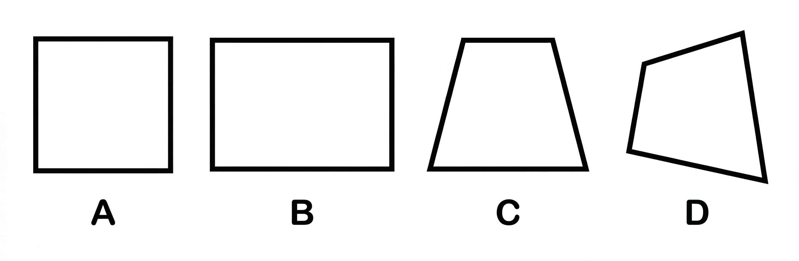
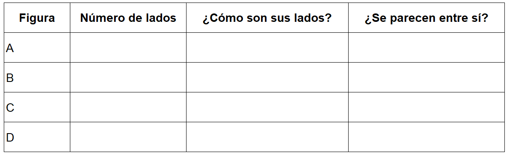
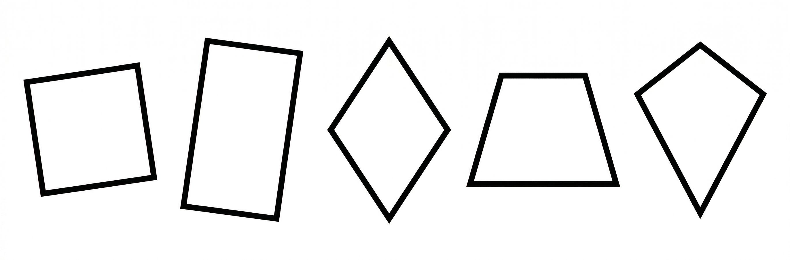
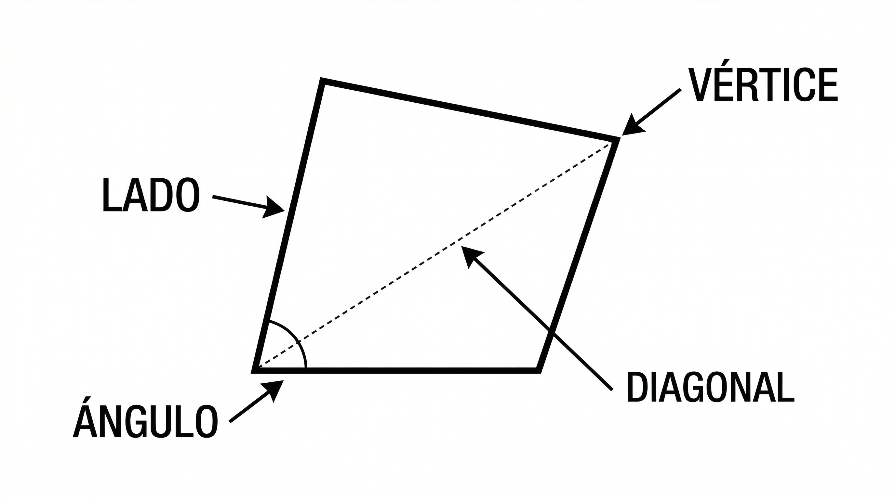
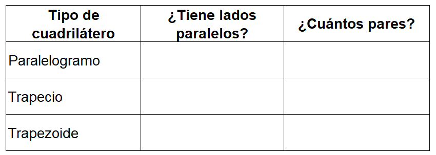
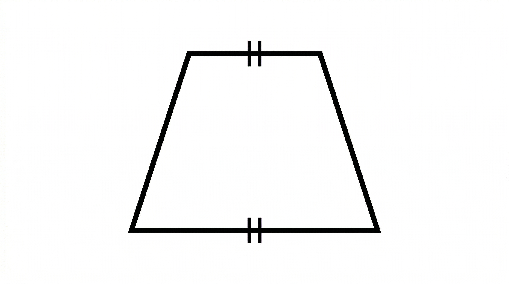
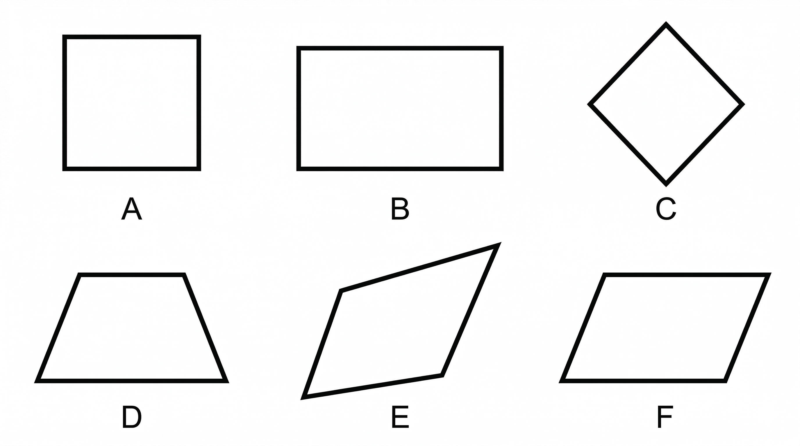
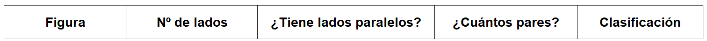

7°
EXPLORACIÓN
Observa tu entorno
En tu casa, colegio o barrio puedes encontrar muchas figuras geométricas sin darte cuenta. Observa con atención los siguientes objetos:
- Una ventana
- Una puerta
- Un tablero
- Una cancha
Responde en tu cuaderno:
1. ¿Qué forma tienen estos objetos?
2. ¿Cuántos lados puedes identificar en cada uno?
3. ¿Todos tienen la misma forma o hay diferencias?
4. ¿Qué características notas en sus lados (iguales, diferentes, paralelos, inclinados)?
Actividad 1 – Identificando formas (★)
Observa las siguientes figuras:

Completa la tabla en tu cuaderno:

Actividad 2 – Compara y describe
Responde:
1. ¿Todas las figuras tienen la misma cantidad de lados?
2. ¿Qué diferencias encuentras entre las figuras?
3. ¿Qué figuras te parecen más “ordenadas” o “simétricas”? ¿Por qué?
4. ¿Hay figuras donde algunos lados parecen ir en la misma dirección? Describe lo que observas.
ANALIZA
Observa con más detalle
Analiza las siguientes figuras con mayor atención:

Responde en tu cuaderno:
1. ★ ¿Qué tienen en común todas estas figuras?
2. ★ ¿Cuántos lados tiene cada una?
3. ★ ¿Qué puedes decir sobre la forma en que se conectan sus lados?
Actividad 3 – Explorando relaciones
Observa nuevamente las figuras y responde:
1. ¿Hay figuras donde algunos lados parecen ser paralelos?
2. ¿En cuáles figuras los lados tienen la misma longitud?
3. ¿En cuáles figuras los lados son diferentes entre sí?
4. ¿Qué pasa con las esquinas (ángulos)? ¿Todas se ven iguales?
Actividad 4 – Piensa y escribe
Completa las siguientes ideas con tus propias palabras:
1. Una figura con cuatro lados podría ser…
2. Algunas figuras tienen lados que…
3. Me doy cuenta de que no todas las figuras de cuatro lados son iguales porque…
Reflexión intermedia
A partir de lo que has observado:
- ¿Crees que todas las figuras de cuatro lados se pueden agrupar de la misma manera?
- ¿Qué criterios usarías para organizarlas?
Escribe tu respuesta con tus propias ideas.
CONOCE ALGO NUEVO
¿Qué es un cuadrilátero?
Un cuadrilátero es una figura geométrica plana que tiene cuatro lados, cuatro vértices y cuatro ángulos.

Elementos de un cuadrilátero
Observa un cuadrilátero cualquiera e identifica:
- Lados: segmentos que forman la figura.
- Vértices: puntos donde se unen los lados.
- Ángulos: aberturas formadas entre dos lados.
- Diagonales: segmentos que unen vértices opuestos.
Clasificación de los cuadriláteros
Los cuadriláteros se pueden clasificar según la forma en que están organizados sus lados.
1. Paralelogramos
Son cuadriláteros en los que los lados opuestos son paralelos entre sí.
Ejemplos de paralelogramos:
- Cuadrado
- Rectángulo
- Rombo
- Romboide
Características generales:
- Tienen dos pares de lados paralelos.
- Los lados opuestos tienen la misma longitud.
2. Trapecios
Son cuadriláteros que tienen un solo par de lados paralelos.
Ejemplo:
- Trapecio
Características generales:
- Un par de lados es paralelo.
- Los otros dos lados no son paralelos.
3. Trapezoides
Son cuadriláteros que no tienen lados paralelos.
Ejemplo:
- Cuadrilátero irregular
Características generales:
- Ningún lado es paralelo a otro.
Compara los cuadriláteros
Completa la siguiente tabla en tu cuaderno:

Ejemplo guiado (modelamiento)
Observa la siguiente figura:

Paso 1: Identifico cuántos lados tiene → ______
Paso 2: Observo si hay lados paralelos → ______
Paso 3: Comparo con la clasificación → ______
Paso 4: Concluyo que es un: __________
Piensa y responde
1. ★ ¿En qué se diferencia un trapecio de un paralelogramo?
2. ★ ¿Por qué un cuadrado es un tipo de paralelogramo?
3. ¿Qué características debe tener una figura para ser un trapezoide?
ACTIVIDADES DE APRENDIZAJE
Actividad 1 – Clasificando cuadriláteros (★)
Observa las siguientes figuras:

Para cada figura:
Paso 1: Cuenta el número de lados.
Paso 2: Identifica si hay lados paralelos.
Paso 3: Determina cuántos pares de lados paralelos tiene.
Paso 4: Clasifica la figura como:
- Paralelogramo
- Trapecio
- Trapezoide
Completa en tu cuaderno:

Actividad 2 – Justifica tu respuesta (★)
Elige dos figuras diferentes de la actividad anterior y responde:
1. ¿Por qué la clasificaste de esa manera?
2. ¿Qué característica fue clave para tomar tu decisión?
✍️ Escribe tu explicación con tus propias palabras.
Actividad 3 – Compara y analiza (Nivel intermedio)
Responde:
1. ¿En qué se parecen un paralelogramo y un trapecio?
2. ¿En qué se diferencian?
3. ¿Puede una figura tener lados paralelos y no ser un paralelogramo? Explica.
Actividad 4 – Dibuja y construye (Nivel intermedio)
Dibuja en tu cuaderno:
1. Un paralelogramo
2. Un trapecio
3. Un trapezoide
Para cada uno:
- Marca los lados paralelos (si tiene).
- Escribe una característica que lo identifique.
Actividad 5 – Reto adicional (Profundización)
Imagina que estás diseñando una ventana para una casa.
1. ¿Qué tipo de cuadrilátero elegirías?
2. Explica por qué esa forma sería la más adecuada.
3. ¿Qué ventajas tendría frente a otras formas?
REFERENCIAS BIBLIOGRÁFICAS
Ministerio de Educación Nacional. (2006). Estándares básicos de competencias en matemáticas. Bogotá, Colombia: MEN.
Ministerio de Educación Nacional. (2016). Derechos básicos de aprendizaje (DBA) – Matemáticas grado séptimo. Bogotá, Colombia: MEN.
Ministerio de Educación Nacional. (s.f.). Vamos a aprender Matemáticas 7. Bogotá, Colombia: MEN.